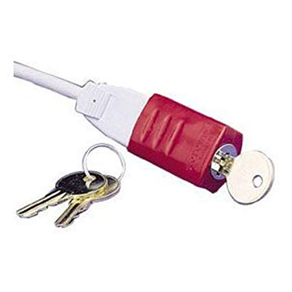
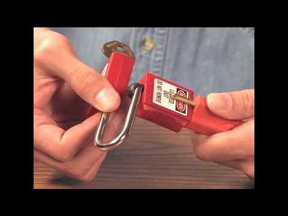

3. Basics and What Members should Know
Introduction
One of the most exciting parts of community biology is lowering the barrier to entry for working in a lab. This shift helps to democratize access to science. It also teaches responsible community behavior such as working alongside other lab members and collaboration. Consider reading"At the Bench: A Laboratory Navigator" by Kathy Barker for more information. It is a great guide for lab members and managers that provides answers to difficult questions about lab safety and procedures.
Basic Training Required to Work at a Community Lab
We recommend that labs offer orientation and training programs to help users get familiar with the space, equipment, protocols, and safety procedures. Offer an entry program that helps people get used to working in the lab that is general and offers simple introductions to the resources, safety equipment, and fire extinguishers. This can be followed by more specific trainings for delicate, hazardous, or expensive equipment and procedures.
Suggested Minimum Training
- Emergency procedures, exits, fire extinguishers, emergency contacts
- Lab hygiene, chemical and biological spills, clean up
- Lab clothing
- Lab equipment safety guidelines
- Certification on restricted equipment
- Community code of conduct
- Waste disposal
- Project-specific safety information based on project review (e.g., chemical or biological specific info)
Lab Etiquette
Lab etiquette is essential for working in a shared space. It is a vital way to ensure that the workload does not grow unmanageable as the membership expands. Because members share the same lab benches, materials, and equipment, it's important to set expectations about cleanliness, equipment usage, and sharing policies.
Lab etiquette is an extension of a lab's "Code of Conduct." A Code of Conduct establishes behavioral norms and is a social contract between the organization and its members (For examples of Codes of Conduct, see Lab Management Practices). Lab etiquette covers more of the particulars on how the lab operates and how to be a good lab user. It covers simple tasks: washing dishes, cleaning up the work area, expectations on equipment usage, labeling, and communication.
| BOX: Examples of poor lab etiquette include:
- Borrowing buffers or solutions without asking permission: put contact information on buffers so users can call the owner of them and ask. If problems continue, lab management may need to check access records to identify persistent offenders.
- Monopolizing equipment: add a note to let other users know when the experiment will end, where the sample can be stored, or how to contact the owner. When starting the autoclave, ask if anyone else has some materials to add. State clearly how long materials may be left in a device and what happens to them when they are removed.
- Taking incubations out even when they are on hold: provide signage that provides directions about what to do and how to tell if the equipment is on hold; provide an "in usedo not remove" tag, along with "your materials were removed after X days of inactivity."
- Moving materials in storage locations: everyone must label their materials and provide signs about what is shared and what is not.
- Poor care of shared resources (e.g., leaving open, empty, wasting supplies): provide signs with guidance and emphasize expectations during training.
- Taking up too much space in a shared storage space: Some labs give out "parking tickets" for leaving materials unclaimed or unlabelled items out. Ensure that a process for disposing unclaimed materials is written into the membership agreement.
- Overusing shared supplies: provide signage to direct people about the reasonable use of supplies. Set expectations during lab inductions of when users should consider buying their own supplies. | | --- |
Basic Hygiene for Lab
Many community lab directors have reported increased productivity, community engagement, and general happiness when spaces are clean and organized. Simple things like clear counters, empty sinks, uncluttered hallways, and organized storage make a good and safe workplace.
We recommend developing and documenting lab decontamination practices. If used appropriately, these procedures will become routine. For example, lab benches and other surfaces should be cleaned and decontaminated before and after every use, and lab benches should be cleared of any unnecessary equipment. Some labs experiment with demarcating areas for pieces of equipment with bright electrical tape or by other means so it is clear when items have not been returned.
Lab Security (Doors, Instruments, Keys, Hours)
Labs should offer guidance on signing and signing out of the space. Procedures should include:
- Building access
- Key holder procedure (who holds physical keys)
- Hours of operation
- Sign-ins for all users (members, staff and guests)
- Tours
- Access to lab
- Specific lab areas
- High-value equipment
- Off hours (e.g., working alone in the lab)
We recommend having locked access to the space and a sign-in/sign-out protocol. These procedures help with overall safety/security, understanding the general use of the space, and enable the collection of metrics that can be used when developing grants and public funding. It also helps when there is an emergency, stolen or damaged equipment, or if lights are left on.
The sign-in process can be simple. It can simply be a piece of paper with a waiver attached at the top of the page (see example table below):
Example Sign-in Sheet
Community Labs Sign In/Waiver Agreements
| Name | Member / Guest / Staff | Time In / Out |
|---|---|---|
More complex sign-in sheets can have tablets synced to a member database allowing members to electronically sign membership agreements. This can be tied to an RFID system as well. If the member has all of the safety requirements, they are permitted entry into the space or use of equipment. Community labs with staff or volunteers who are often in the space can ask that they remind people upon entering the space to sign in.
Access to Specific Equipment
We suggest labs restrict access to high-value or dangerous equipment. High-value equipment is difficult to find and most likely very expensive to repair if broken. There are several ways to restrict access: move the equipment to a separate room; remove and lock away key parts without which the equipment will not function, like expensive microscope objectives or sample input pumps; place lockout tags on pressure regulators; install access or power cord locks. RFID lockout solutions are commercially available but expensive.
 
Emergency Exits
A map of the emergency exits should be posted in highly visible public areas, along with the location of flammable cabinets, compressed gas cylinder, and other fire hazards. The leasing agent or landlord of the space should be able to provide a general building plan and map of the area for customization. This plan will help members and emergency responders know how to evacuate and either avoid or address hazards in the case of fire.
Working Alone in the Lab
A policy should be implemented to allow the use of the facility in the evenings, weekends, and unusual working hours. Many experiments do not follow normal business hours. As such, neither do accidents. Here are some policies for labs whose users work in the facility alone:
- All users should be required to fill out an emergency contact form.
- Have members read and acknowledge a lone working policy including the dangers of working alone.
- Quiz them on emergency procedures.
- Create a policy where lone users must inform another person that they are working in the lab alone.
- Ensure that the sign-in and sign-out procedure is followed.
- Consider if there are any times where special permission should be sought or restrictions imposed when members work in the lab overnight or with dangerous chemicals.
- Include as part of projects risk assessments a section detailing what procedures safe hours or experiments that should not undertaken alone.
- Consider recording members' hours through RFID cards used to access the lab. Video cameras might also be installed for both safety and security reasons, but be mindful of privacy concerns and data protection regulations in your area.
We recommend that individuals under the age of 18 never work alone in the lab. A parent, guardian, or mentor should be the responsible party and must be with them at all times, without exception. See Chapter 2 - Lab Management Practices for more recommendations on setting youth policies in your lab.
Basic Clothing and Footwear
Lab coats should be available for users along with other PPE such as gloves and safety glasses. There are additional basic clothing, footwear, and other considerations to take into account while working in the lab.
- Clothes should not be at risk of dangling in chemicals, biological cultures, or of easily catching on fire.
- Clothing should cover the skin (e.g., no shorts or short skirts).
- No shoes with exposed skin or high-heeled shoes.
- Long hair should be tied back.
- No long or dangling jewelry, bracelets, or scarves, which could get tangled in moving parts or snagged on items in the lab.
- Remove rings that could puncture gloves.
Be prepared to ask people to change into clothes that are more suitable for work in the lab if they arrive in unsuitable attire. Consider providing hair ties and foot covers (booties). Remember that users will not necessarily know all of the dangers in the lab, so reminding them before activities such as workshops and posting a clothing and PPE policy in a visible place is important.
For more information on clothing and PPE, see Chapter 8 - Personal Protective Equipment.
Food, Beverages, Application of Makeup, or Contact Lenses in the Lab
Community labs should apply a strict policy that no food, beverages, or gum be allowed in the lab because of the risk that food or drinks could become cross-contaminated and then be ingested. If food and drink are allowed in areas outside the lab, consider providing a separate fridge and sink. Similarly, the application of contact lenses or makeup should also be banned from the lab to avoid cross-contaminated with chemicals or organisms.
Housekeeping
Paying for a professional biowaste pickup service is a valuable investment in the biosafety of your space (see Waste DIsposal). Holding occasional cleaning parties (in conjunction with an event) can be useful for tidying the lab. If the lab can afford to pay for general housekeeping for bathrooms and common areas, we recommend considering this as it is usually not too expensive and can really make the space tidier.
Trash, Clean Lab Benches, Cleaning Up Spills
Volunteers and members should be trained in trash and general cleanup techniques. Cleanup can also be a regular part of classes.
Cleaning Up Spills
A chemical and biological spill kit should be readily available in your lab. They do not have to be complex for most spills, but they can help greatly in preventing a spill from reaching a floor drain. Uline andPIG sell good basic kits, but you can more cheaply assemble your own kit. See Emergency Procedures for more information on spill kits dealing with spills.
Signage and Labeling
Signs and labels are essential components of lab safety. Basics that should be labeled:
- Storage locations
- Emergency contact information
- Instructions for cleaning
- Contact information for questions on machine operation
- Contact information for safety questions
- Special equipment warnings (e.g., hot surface, under pressure, close valve when finished, laser in use, before using this equipment you must pass training)
- Warnings about the building or structure
- Emergency exits
- Emergency equipment (e.g., electrocution hazard, fire extinguisher)
All chemicals and biological materials should be labeled, along with every derivative. Please refer to the section on labeling in Chapter 10 - Chemical Safety and Chapter 13 - Biological Safety for more information.
Emergency Response
We recommend having well-documented emergency response procedures and making sure that all members are familiar with them. Ensure that emergency contact information is clearly displayed in the space along with non-emergency numbers and email addresses for issues like blown fuses, broken lights, suspicious people, or unusual smells. For more information, see Chapter 6 - Emergency Procedures.